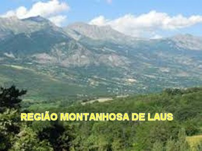
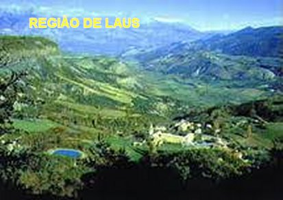
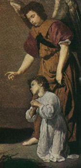
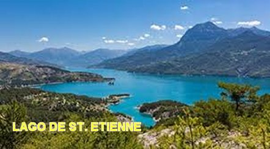
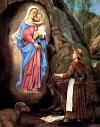

"ESCOLHIDA POR DEUS"
NASCIMENTO –
PRIMEIROS TEMPOS 
Na Aldeia de Saint Etienne d’Avancon localizada no vale do Avance (Dauphiné - Sul da França), nasceu no dia 16 de Setembro de 1647, Benôite Rencurel (em português, Benta ou Benedita), que veio a se tornar a famosa vidente de Laus.
Junto com seus pais e duas irmãs viviam com grande pobreza numa modesta casa no pequeno terreno que possuíam. Entretanto, sendo cristãos fervorosos, se sentiam consolados espiritualmente pelo grande amor que mantinham por JESUS e pela SANTÍSSIMA VIRGEM MARIA.
A mãe, com pouca instrução, se esforçava para transmitir tudo o que sabia, carinhosamente colocando a filha no colo e pacientemente transmitindo-lhe as coisas da vida e principalmente as orações que conhecia. No âmago dos seus ensinamentos, ser uma pessoa boa, obediente e que rezasse ao Senhor DEUS, era tudo e o principal, que uma mãe zelosa deveria recomendar a sua filha. E assim pensando lhe ensinou o Pai Nosso, a Ave Maria e o Credo que eram as únicas orações que conhecia.

Obediente e resignada, com a idade de 12 anos deixou a sua pobre casa para ir trabalhar numa residência, onde realizava todos os serviços domésticos e também cuidava das criações. Nas horas de folga permanecia rezando, porque era justamente através das orações que encontrava consolo para o espírito e para as suas dores físicas. Por isso mesmo, pediu à sua mãe que lhe comprasse um Rosário, porque ela estava rezando contando as Aves Maria, nos dedos.
PROTEÇÃO DIVINA
Sem o conhecimento e a versatilidade verbal daqueles que puderam estudar desde jovem, inteligentemente Benedita pela sinceridade e constância da sua religiosidade, conseguiu desenvolver os seus conhecimentos. E assim, unindo sua inteligência aos atos de fervor, a responsável pastora também soube cultivar um precioso recurso de aconselhar pessoas exaltadas com sábias exortações: falava fervorosamente de DEUS, do Céu, do inferno, com a permanente convicção da sua fé, que até os mais obstinados ficavam impressionados com suas palavras.
Com o salário de seu trabalho, pode
frequentar as aulas e se afastar do analfabetismo. Um de seus dois mestres era um homem
violento, frequentemente ficava 
As realidades da existência quando unidas a verdadeira caridade é sempre acompanhada da pureza do coração. Não muito longe de Saint Etienne existe uma nascente límpida chamada "Fonte Clara" que formou um lago, o qual deu nome a toda à região (Vale do Lago = “Vale do Laus”). Um dia a jovem Benedita estava naquela região com o rebanho da sua patroa, quando dois homens que também passavam por ali, tiveram o mau pensamento de aproveitar da solidão local, a fim de experimentar a virtude da pastora que tranquilamente cumpria a sua função. Os dois homens imaginavam que uma jovem com pouca idade não ia resistir as suas investidas.
Benedita percebendo as intenções deles, imediatamente tratou de fugir, correndo com todas as suas forças em direção ao pântano. Ali era uma verdadeira armadilha... Podia salvar, mas também podia morrer. As águas poderiam ser profundas e ter no fundo um solo fraco e mole, que por certo, não ia resistir o peso de uma pessoa, e ela não iria conseguir atravessá-lo. Mesmo assim, ela não pensou, lançou-se resoluta nas águas do pântano... Todavia, o solo solidificou e resistiu sob os seus pés, e ela atravessou ligeira aquela área alagada, enquanto os dois homens que a perseguiam caminhavam com extrema dificuldade com a água na altura da cintura. Eles então, apesar de maus, puderam entender que Benedita estava recebendo uma proteção especial do Céu. Então logo compreenderam a verdade, e arrependidos, voltaram e seguiram o seu caminho. Este fato aconteceu quando a pequena pastora tinha apenas quinze anos de idade, e se arriscou morrer por afogamento no pântano, se esforçando para defender a sua honra e a pureza virginal, tendo sido protegida pela misericórdia infinita do SENHOR DEUS e da VIRGEM MARIA.
Este acontecimento chegou como um “Aviso”, pois a partir daquele fato, pela vontade da VIRGEM MARIA, a jovem entrou num relacionamento cada vez mais íntimo com a realidade sobrenatural.
PREDIÇÃO MATERNA
E justamente o Vale do Laus foi aquele escolhido para compor o lindo cenário das maravilhosas visitas da SANTÍSSIMA VIRGEM MARIA, MÃE DE DEUS. Tudo ali era silencioso e solitário. Um lago, agora desaparecido, deu o seu nome ao local, “Laus”. Naquela região o povo era muito devoto e sentia muita tristeza pela distância da Paróquia! Por isso mesmo, os moradores da região logo pensaram em construir ali uma Capela, onde pudessem rezar e um sacerdote pudesse vir e celebrar as Santas Missas para as famílias do local. E imaginem, os moradores desejavam colocar na Capela o nome de “NOSSA SENHORA DO BOM ENCONTRO”. Sem dúvida foi um nome inspirado pelo Céu, porque foi ali mesmo, que Benedita encontrou a SANTÍSSIMA VIRGEM MARIA.

Depois da morte de Benedita NOSSA MÃE SANTÍSSIMA não apareceu mais na Capela. Mas ELA prometeu e verdadeiramente nunca deixou de provar a sua presença naquele lugar através das SUAS Graças, que derramou e derrama caudalosamente, para todos aqueles que rezam e vem suplicar o SEU precioso carinho de MÃE, intercedendo junto ao DEUS DA VIDA, alcançando as graças preciosas e incontáveis, para todos os filhos que buscam a sua preciosa e tão querida proteção.
E foi justamente perto daquele lugar onde construíram aquela Capelinha, que já existia outra Capela dedicada a São Maurício. Certo dia enquanto Benedita rezava o Rosário na Capela de São Maurício, que era a sua oração preferida, porque ouviu num sermão na Santa Missa, o Padre falar que o Rosário era a oração preferida de NOSSA SENHORA. Assim, ela rezava o Rosário com fé, respeito e veneração, tendo sempre na mente uma imagem da VIRGEM SANTÍSSIMA, quando naquele dia São Mauricio lhe apareceu e disse: “Minha filha, vai ao Vale em que está localizado Saint Etienne, e ali verá a boa MÃE DE DEUS”.
- Benedita com sua maneira simples e franca de falar, disse: "O que você me diz? A VIRGEM SANTA está no Céu, como posso vê-LA naquele lugar?”
- Respondeu o mensageiro celeste: “Sim, ELA está no Céu, mas também está na Terra, se ELA quer”.
PRIMEIRO ENCONTRO COM NOSSA SENHORA
Benedita se apressou e foi ligeira em direção ao Vale indicado por São Mauricio. Lá chegando, observou o fundo do Vale entre os dois braços de um pequeno riacho, e nele, a existência de uma pedreira de gesso na rocha. Esse lugar era chamado de “Torni”.. Ali Benedita já havia recitado o Rosário em outra ocasião! Caminhou até defronte à caverna que existia na pedreira de gesso. De súbito ela teve a visão de uma Bela Senhora, segurando pela mão uma linda criança de maravilhosa beleza. Ficou admirada... Dos olhos da Senhora saiam raios de luz que iluminavam o Vale; de SEU vestido emanava um suave perfume que a fazia acreditar que todo o Vale estava repleto de flores.
Mas Benedita na sua imensa simplicidade, apesar de tudo isso, de ouvir as palavras da linda SENHORA, apesar de seu grande desejo de contemplar o indescritível rosto DELA, nem sequer imaginou quem poderia ser Aquela Maravilhosa Senhora. Ao contrário, perguntou simplesmente: "O que você veio fazer aqui, linda Senhora? Quer comprar um gesso?" Então, sem esperar pela resposta da Senhora, perguntou: "Quer deixar o bebê comigo? A gente o abraça com alegria”...
Com tanta simplicidade, NOSSA SENHORA sorriu, mas não disse nenhuma palavra. A visão durou muito tempo e só no meio da tarde Benedita sentiu fome. Então, voltando-se para a Senhora: "Quer almoçar comigo? Tenho um bom pão! Posso molhá-lo na água da fonte para ficar mais macio”...
NOSSA SENHORA sorriu novamente, e continuou a caminhar perto da caverna. Depois, quando Benedita se aproximou um pouco mais, ELA começou a lhe dar conselhos, explicando fatos e acontecimentos da vida, assim como lhe ensinando uma bela oração ao SANTÍSSIMO SACRAMENTO.
Assim que a noite começou a chegar. NOSSA SENHORA pegou o MENINO JESUS nos braços, entrou na caverna e desapareceu.
No dia seguinte no mesmo local e no mesmo horário, a mesma maravilha, o mesmo consolo. Por cerca de quatro meses, todos os dias, Benedita gozou daquele privilégio e teve a felicidade de contemplar e conversar com AQUELA maravilhosa SENHORA que ela não sabia quem era, mas que lhe dava lindos conselhos, que lhe revelava e iluminava caminhos na vida, e lhe ensinava tantas coisas úteis, bonitas e agradáveis. A pequena pastora atraída por Ela se esquecia de tudo: os dias eram curtos e as noites muito longas. Assim, depois de ter encantado o coração da pequena pastora com a sua beleza celeste, com sua preciosa inteligência, a MÃE DE DEUS finalmente rompeu o SEU silêncio. Não podemos saber o que a VIRGEM MARIA disse a Benedita, mas o pouquinho que imaginamos é suficiente para nos fazer compreender que NOSSA SENHORA veio para consolar e ao mesmo tempo instruir aquela humilde e fervorosa pastora.
NA ESCOLA DE MARIA

A VIRGEM MARIA também ensinou a Benedita, as Litanias, repetindo palavra por palavra, como as mães fazem com os filhos. E a pastorinha repetiu varias vezes, sem hesitar e em pouco tempo aprendeu a oração.
Mas NOSSA SENHORA também a orientou a se desapegar das coisas, a ser generosa, a renunciar por amor até aquilo que é bom. Um dia, depois de tê-la enviado à Missa na cidade, a VIRGEM MARIA conduziu o rebanho a outro vale muito distante. Na volta da Missa, Benedita começou a chorar e a procurar pelo rebanho e NOSSA SENHORA, estava preocupada, mas sem perder a paciência.
NOSSA SENHORA observou de longe todos os gestos dela. Esperou o momento certo e depois voltou e lhe disse: "Mesmo sem encontrar o seu rebanho e sem ME ver, você não ficou impaciente. Muito bem. EU quis provar a sua paciência". Após o teste, vieram as carícias de NOSSA MÃE SANTÍSSIMA.
Em outra ocasião, a MÃE DE DEUS, vendo sua querida filha exausta de cansaço, convidou-a descansar ao seu lado. Benedita obedeceu e adormeceu suavemente encostada em NOSSA SENHORA.